Sevgili öğrenciler ve değerli öğrenci yakınları, Hogwarts Düello Turnuvası'na hoş geldiniz! Yüzlerce yıllık bu şato, kurulduğundan beridir büyücedünyaya çokça kıymetli isim katmış bir eğitim kurumudur. Bu hafta boyunca ise kimisi politik, kimisi akademik, kimisi maceracı birçok figürün bulunduğu bu duvarlar arasındaki en atikleri, en hızlı asa çekenleri, en başarılı düellocuları keşfedeceğiz!
Katılımcılar, hararetli ön eleme turlarının ardından bir hayli azalmış ve yalnızca on bir kişiye inmiş durumdalar. Bu noktadan itibaren turnuvalara, katılımcılarımızın yakınları ve seçme bir izleyici kesimi de davetlidir. Öğrencilerin kendilerini göstermek ve ilgili gelecek planları için uygun olduklarını ispatlamak için, şan şöhret için, gelecek olan Dört Büyücü Turnuvası'na beşinci özel koltuk hakkını kazanmak için ise yegane fırsatları! Şimdiden bu aşamaya çıkabilmiş olan tüm öğrencileri tebrik ediyor, hepsine başarılar diliyoruz.
Turnuva braketi, aşağıda görüldüğü gibidir:
Turnuva müsabakaları, sırayla önümüzdeki tarihlerde online ve simültane olarak gerçekleşecektir:
Birinci Tur MüsabakalarıGaye I. Lacroix v
A. Ares CaldecottPaul Wilson v
Eurus M. SoleilFranziska Strömm v
Eadwig A. BoleynBirinci tur müsabakaları, 6 Şubat saat 20.00-23.00 aralığında icra edilecektir. Her bir kişinin ilgili GM metni yahut rakip hamlesi sonrasında kendi düello hamlelerini icra etmek için 10'ar dakikası vardır. 10 dakika içerisinde hamle yapılmadığı takdirde sıra rakibine geçer ve o anda yalnızca kendini korumayı denediği varsayılır. (pek de başarılı olmayacak bir şekilde) Düellolar 23.00'a gelindiğinde duruma göre sona erip hükmi galibiyet kararı alınabilir.
Çeyrek Final MüsabakalarıBelirlenecek
Bu müsabakalar da birinci turla aynı kurallar çerçevesinde icra edilecek olup tarihi 7 Şubat saat 20.00-23.00 aralığıdır.
Yarı Final MüsabakalarıBelirlenecek
Bu müsabakalar da birinci turla aynı kurallar çerçevesinde icra edilecek olup tarihi ilan edilecektir.
Final MüsabakalarıBelirlenecek
Bu müsabakalar da birinci turla aynı kurallar çerçevesinde icra edilecek olup tarihi ilan edilecektir.
Turnuva başlangıcı itibarıyla tüm katılımcıların Güç Puanı satın alımlarına ara verilecektir. Şu anki verilere göre mevcut katılımcıların güç düzeyi analizleri ise şu şekildedir:
Adrian H. H. Darkworm[spoiler]
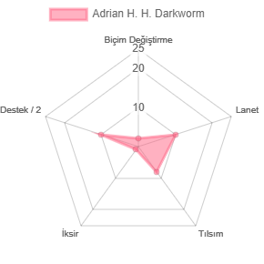
[/spoiler]
A. Ares Caldecott[spoiler]
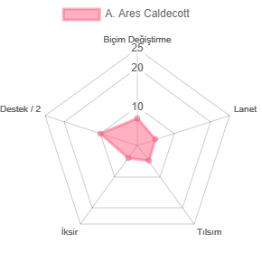
[/spoiler]
Eadwig A. Boleyn[spoiler]
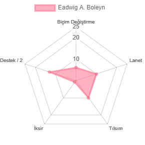
[/spoiler]
Eurus M. Soleil[spoiler]
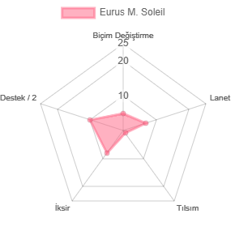
[/spoiler]
Franziska Strömm[spoiler]
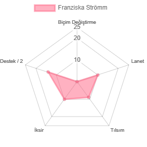
[/spoiler]
Gaye I. Lacroix[spoiler]
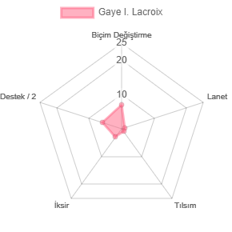
[/spoiler]
Jimmy Folke[spoiler]
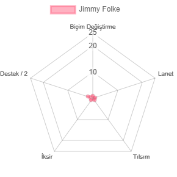
[/spoiler]
Mirabelle Starlight[spoiler]
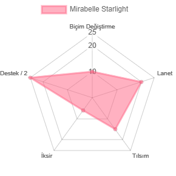
[/spoiler]
Paul Wilson[spoiler]
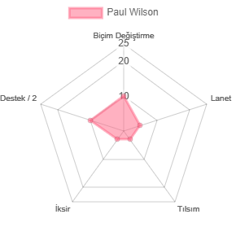
[/spoiler]
Regina A. Romanovna[spoiler]
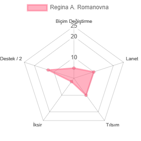
[/spoiler]
Samuel R. Boleyn[spoiler]
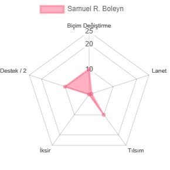
[/spoiler]
Bu bilgiler ışığında Hogwarts Düello Turnuvası bahis oranları
aşağıdaki şekildedir:Gaye I. Lacroix (3.00) v (2.70)
A. Ares CaldecottPaul Wilson (2.60) v (3.10)
Eurus M. SoleilFranziska Strömm (3.10) v (2.60)
Eadwig A. BoleynTurnuva tahmin oyunlarıyla ilgili kurallar ise aşağıdaki şekildedir:
-Bir oyuncu, kendi maçlarından birine bahis oynayamaz. Aynı şekilde, bir oyuncuya başka bir oyuncuya Galleon vb. aktarımı üzerinden bahis oynanamaz. Bu tip bahisler tespit edildiklerinde işbu oyuncuların tüm bahisleri geçersiz sayılır.
-Bir oyuncu, her bir müsabaka maçına en fazla 200 Galleon bahis yatırabilir.
-Bir oyuncu, her bir müsabaka için ayrı ayrı bahis oynayabilir yahut yalnızca bir veya birkaç spesifik maça oynamayı tercih edebilir.
-Bahisler için
Locomotor hesabına Galleon gönderiminde bulunmalısınız. Format, üç maçı da içermelidir. Örnek bir mesaj:
5 Şubat müsabaka bahisleri:
1. Maç: 100 Galleon, X kişisi
2. Maç: Bahis yok
3. Maç: 160 Galleon, Y kişisi
*Oyuncu kelimesi ile kastedilen hesap değil, hesapların ait olduğu tekil kişiyi ifade etmektedir.
**Söz konusu bahisler yalnızca site içerisindeki farazi bir para birimi olan Galleon üzerinden oynanıp Galleon, maddi hiçbir yolla elde edilemeyen yahut maddi hiçbir karşılığa çevrilemeyen hayali bir para birimidir. Gerçek parayla kumar oynanması belirli yollar dışında illegal olup oynanmasını hiçbir şekilde teşvik etmeyiz. (Sorumluluk reddi beyanı :d)
***Bahis gelirleri, turnuvanın sonunda yekün olarak dağıtılacaktır.
Tezahürat konusunda çalışmalarımız devam etmektedir, ilginç fikirlerle gelebildiğimiz noktada güncellemede bulunuruz.
 [/spoiler]
[/spoiler]